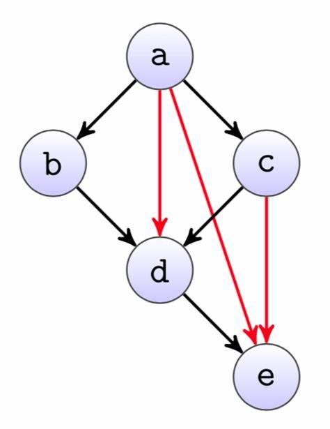
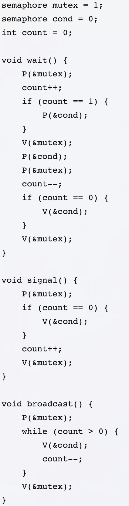
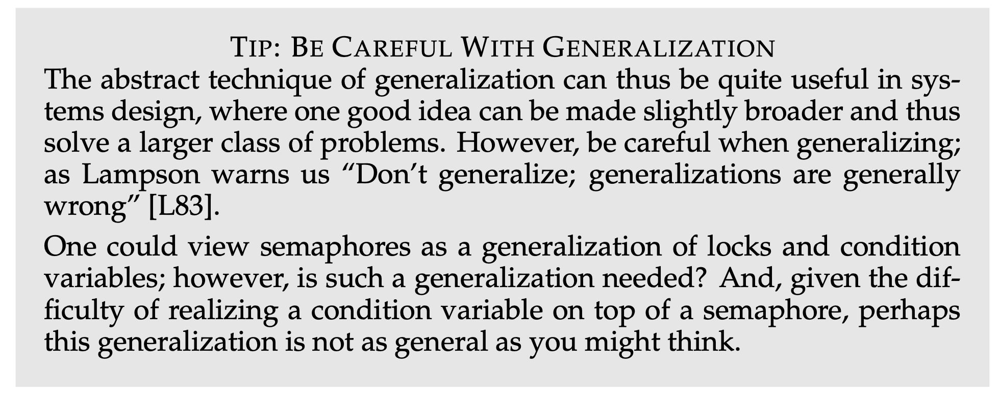

对应了两种线程 join 的方法

对于任何计算图
void Tworker_d() {
P(bd); P(ad); P(cd);
// 完成节点 d 上的计算任务
V(de);
}
乍一看很厉害
实际上……
有三种线程
<>_<><_ 和 ><>_ 的序列？信号量的困难
< 和 > 都是可行的_ 的线程随机选一个
当然是问 AI 了
操作系统用自旋锁保证 wait 的原子性
wait(cv, mutex) {
release(mutex);
sleep();
}
P(mutex); nwait++; V(mutex);P(sleep);信号量是对 “袋子和球/手环” 的抽象
P(empty); printf("("); V(fill)